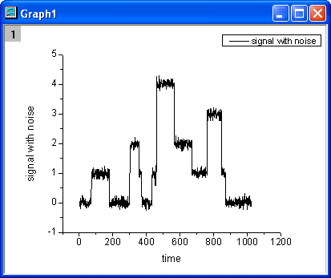
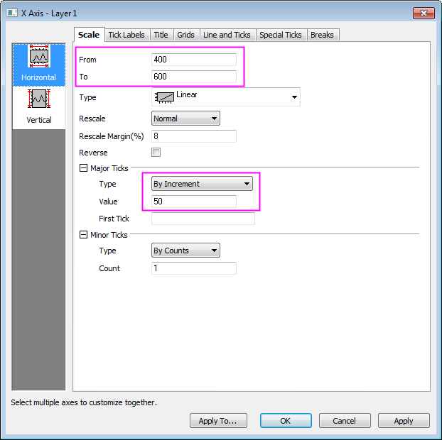
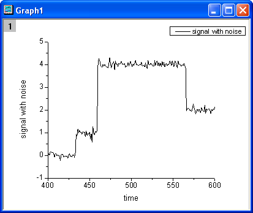
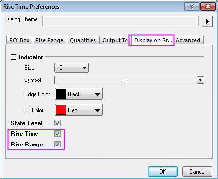
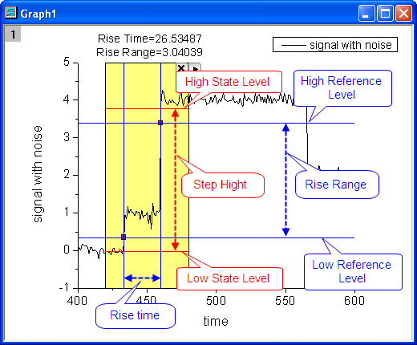
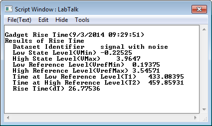
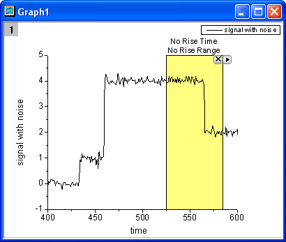
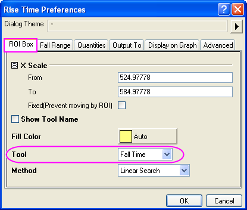
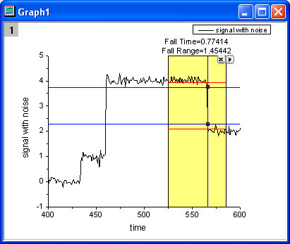

Minitool Flankenanalyse
RiseTime-Gadget
Zusammenfassung
Das Minitool der Flankenanalyse kann zum Analysieren der ansteigenden und abfallenden Flanke eines stufenartigen Signals verwendet werden. Mit diesem Minitool können Sie intuitiv mit einem Rechteck einen Bereich im Diagramm auswählen und dann die ansteigende bzw. abfallende Flanke innerhalb des Bereichs berechnen.
Origin-Version mind. erforderlich: OriginPro 2015.0 SR0
Was Sie lernen werden
- Einen bestimmten Bereich des Signals durch Verschieben und Größenveränderung der ROI auswählen
- Anstiegszeit (Abfallszeit) und Anstiegsbereich (Abfallsbereich ) im Diagramm markieren
- Hilfsmittel zwischen Anstiegszeit und Abfallszeit wechseln
- Analyseergebnisse der Anstiegszeit (Abfallzeit) ausgeben
Anstiegszeit analysieren
- Öffnen Sie eine neue Arbeitsmappe und klicken Sie auf die Schaltfläche
 , um die Datei Step Signal with Random Noise.dat im Verzeichnis <Origin>\Samples\Signal Processing zu importieren.
, um die Datei Step Signal with Random Noise.dat im Verzeichnis <Origin>\Samples\Signal Processing zu importieren.
- Markieren Sie Spalte B und wählen Sie Zeichnen: Linie: Liniendiagramm im Origin-Menü zum Zeichnen eines Diagramms.

- Klicken Sie doppelt auf die X-Achse, um den Dialog Achsen zu öffnen. Gehen Sie zur Registerkarte Skalierung und legen Sie den Achsenbereich und die großen Hilfsstriche, wie im Bild unten zu sehen, fest.

- Klicken Sie auf OK, und das Diagramm wird folgendermaßen aktualisiert: 
- Wählen Sie Minitools: Flankenanalyse im Origin-Menü, um den Dialog Data Exploration: addtool_rise_time zu öffnen. Wechseln Sie zur Registerkarte Auf Diagramm anzeigen und aktivieren Sie die Kontrollkästchen Anstiegszeit und Anstiegsbereich.

- Klicken Sie auf die Schaltfläche OK, und ein gelbes Rechteck wird zu dem Diagramm hinzugefügt. Verschieben Sie das Rechteck horizontal auf der ansteigenden Signalstufe.

Im Diagramm werden die Werte der Anstiegszeit und Anstiegsbereich oberhalb des Rechtecks angezeigt.
Die zwei blauen vertikalen Linien gehen durch die beiden Indikatoren , die die Anstiegszeit markieren.
Die zwei blauen horizontalen Linien, die die niedrige Referenzstufe und die hohe Referenzstufe anzeigen, gehen durch die beiden Indikatoren, die den Anstiegsbereich markieren.
Die zwei roten horizontalen Linien zeigen die niedrige Zustandsstufe und die hohe Zustandsstufe an.
- Klicken Sie auf die dreieckige Schaltfläche
 in der oberen rechten Ecke des Rechtecks. Wählen Sie dann Neue Ausgabe. Die Ergebnisse werden im Skriptfenster ausgegeben.
in der oberen rechten Ecke des Rechtecks. Wählen Sie dann Neue Ausgabe. Die Ergebnisse werden im Skriptfenster ausgegeben.

Abfallszeit analysieren
- Mit diesem Minitool können Sie die Abfallszeit und den Abfallsbereich in einem Diagramm ermitteln. Verschieben Sie das Rechteck horizontal auf der abfallenden Signalstufe.

- Klicken Sie auf die dreieckige Schaltfläche und wählen Sie Einstellungen im Ausklappmenü, um den Dialog Anstiegszeit Einstellungen zu öffnen. Wechseln Sie zur Registerkarte Grafische Datenauswahl und wählen Sie Abfallszeit in der Auswahlliste Hilfsmittel.

- Klicken Sie auf die Schaltfläche OK. Die Werte für Abfallszeit und Abfallsbereich werden oberhalb des Rechtecks angegeben.

- Klicken Sie auf die dreieckige Schaltfläche und wählen Sie Neue Ausgabe. Die Ergebnisse werden im Skriptfenster ausgegeben.